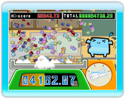

11 |
Minispiele (1) |
 |
Dieses Minispiel ist eine hochwertige Herausforderung, bei der man sehr schnell rütteln muss. Schütteln Sie die Wii-Fernbedienung so schnell wie möglich, um einen unschlagbaren Rekord zu erzielen. Der Spieler mit der höchsten Punktzahl nach schüttel-intensiven 3 Sekunden gewinnt!
Rütteln Sie die Wii-Fernbedienung schneller um zum
|


 |
 |
 |